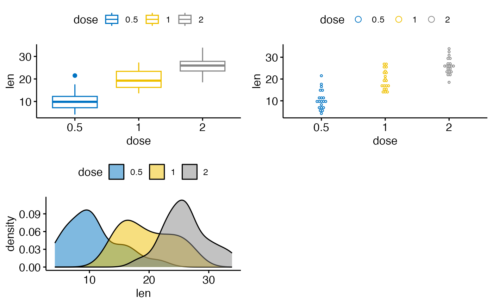
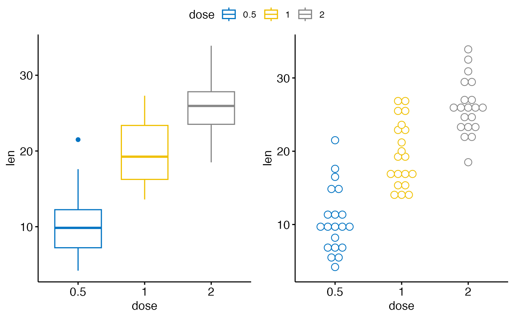

Arrange multiple ggplots on the same page. Wrapper around
plot_grid(). Can arrange multiple ggplots over
multiple pages, compared to the standard
plot_grid(). Can also create a common unique legend
for multiple plots.
Usage
ggarrange(
...,
plotlist = NULL,
ncol = NULL,
nrow = NULL,
labels = NULL,
label.x = 0,
label.y = 1,
hjust = -0.5,
vjust = 1.5,
font.label = list(size = 14, color = "black", face = "bold", family = NULL),
align = c("none", "h", "v", "hv"),
widths = 1,
heights = 1,
legend = NULL,
common.legend = FALSE,
legend.grob = NULL
)Arguments
- ...
list of plots to be arranged into the grid. The plots can be either ggplot2 plot objects or arbitrary gtables.
- plotlist
(optional) list of plots to display.
- ncol
(optional) number of columns in the plot grid.
- nrow
(optional) number of rows in the plot grid.
- labels
(optional) list of labels to be added to the plots. You can also set labels="AUTO" to auto-generate upper-case labels or labels="auto" to auto-generate lower-case labels.
- label.x
(optional) Single value or vector of x positions for plot labels, relative to each subplot. Defaults to 0 for all labels. (Each label is placed all the way to the left of each plot.)
- label.y
(optional) Single value or vector of y positions for plot labels, relative to each subplot. Defaults to 1 for all labels. (Each label is placed all the way to the top of each plot.)
- hjust
Adjusts the horizontal position of each label. More negative values move the label further to the right on the plot canvas. Can be a single value (applied to all labels) or a vector of values (one for each label). Default is -0.5.
- vjust
Adjusts the vertical position of each label. More positive values move the label further down on the plot canvas. Can be a single value (applied to all labels) or a vector of values (one for each label). Default is 1.5.
- font.label
a list of arguments for customizing labels. Allowed values are the combination of the following elements: size (e.g.: 14), face (e.g.: "plain", "bold", "italic", "bold.italic"), color (e.g.: "red") and family. For example font.label = list(size = 14, face = "bold", color ="red").
- align
(optional) Specifies whether graphs in the grid should be horizontally ("h") or vertically ("v") aligned. Options are "none" (default), "hv" (align in both directions), "h", and "v".
- widths
(optional) numerical vector of relative columns widths. For example, in a two-column grid, widths = c(2, 1) would make the first column twice as wide as the second column.
- heights
same as
widthsbut for column heights.- legend
character specifying legend position. Allowed values are one of c("top", "bottom", "left", "right", "none"). To remove the legend use legend = "none".
- common.legend
logical value. Default is FALSE. If TRUE, a common unique legend will be created for arranged plots.
- legend.grob
a legend grob as returned by the function
get_legend(). If provided, it will be used as the common legend.
Author
Laszlo Erdey erdey.laszlo@econ.unideb.hu
Examples
data("ToothGrowth")
df <- ToothGrowth
df$dose <- as.factor(df$dose)
# Create some plots
# ::::::::::::::::::::::::::::::::::::::::::::::::::
# Box plot
bxp <- ggboxplot(df, x = "dose", y = "len",
color = "dose", palette = "jco")
# Dot plot
dp <- ggdotplot(df, x = "dose", y = "len",
color = "dose", palette = "jco")
# Density plot
dens <- ggdensity(df, x = "len", fill = "dose", palette = "jco")
# Arrange
# ::::::::::::::::::::::::::::::::::::::::::::::::::
ggarrange(bxp, dp, dens, ncol = 2, nrow = 2)
#> Bin width defaults to 1/30 of the range of the data. Pick better value with
#> `binwidth`.

# Use a common legend for multiple plots
ggarrange(bxp, dp, common.legend = TRUE)
#> Bin width defaults to 1/30 of the range of the data. Pick better value with
#> `binwidth`.
